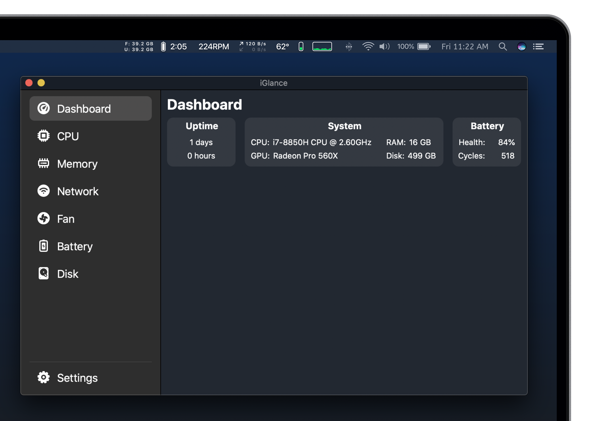

OpenGlance is an actively maintained fork of iGlance, a macOS system monitor for the menu bar. It keeps iGlance's GPLv3 license and contributor attribution while continuing development with a modernized interface and expanded dashboard.
Download for macOS
macOS 10.13 or later. Apple Silicon and Intel Macs are supported.